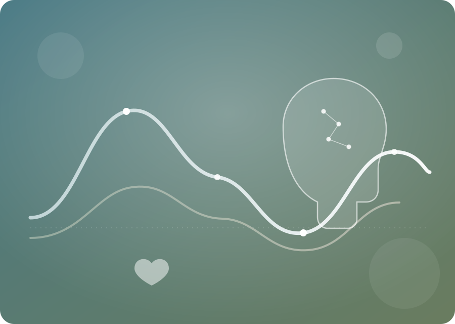

Understand bipolar disorder, one grounded answer at a time
Dr. Mood is an AI assistant that explains bipolar disorder using approved clinical guidelines only — every answer is grounded in a real source, never a guess.

What Dr. Mood does
Dr. Mood answers questions about bipolar disorder — symptoms, diagnosis, course, and general management — using excerpts from the NICE CG185 clinical guideline. Every answer is grounded in a real source you can open and read yourself, and the assistant will tell you honestly when it can't find a good enough answer instead of guessing.
Evidence-based answers
Every response is grounded in real guideline excerpts, with a confidence level shown alongside the evidence.
Numbered citations
Click any [1] [2] in an answer to jump straight to that source in the evidence panel.
Bilingual by design
Ask in Arabic or English — Dr. Mood searches the source material and replies in the same language.
Patient / Doctor modes
Switch tone and terminology depending on who's asking, right from the chat header.
Built-in safety net
If a message shows signs of crisis, Dr. Mood responds with care and points to real support instead of general facts.
Your history, saved
Log in and every conversation is saved to your account, so you can pick up where you left off.
Dr. Mood
Evidence-based bipolar support
Bipolar disorder & this project
Clear, sourced information about the condition, and what Dr. Mood is built on.
What is bipolar disorder?
Bipolar disorder is a mental health condition marked by extreme shifts in mood, energy, and activity levels — swinging between emotional highs (mania or hypomania) and lows (depression). These aren't ordinary mood changes; episodes can last days to months and affect sleep, judgement, and daily functioning.
Types of bipolar disorder
Bipolar I involves at least one full manic episode, often with depressive episodes too. Bipolar II involves hypomanic episodes (less severe than mania) alternating with major depressive episodes. Cyclothymic disorder involves numerous milder mood swings over at least two years that don't meet the full criteria for mania or major depression.
Signs of mania & hypomania
Unusually elevated or irritable mood, inflated self-esteem, decreased need for sleep, rapid speech, racing thoughts, distractibility, increased goal-directed activity, and risky behaviour (spending, impulsive decisions). Mania is severe enough to disrupt daily life or require hospitalisation; hypomania is milder and shorter.
Signs of depressive episodes
Persistent low mood, loss of interest or pleasure, fatigue, feelings of worthlessness or guilt, difficulty concentrating, changes in sleep or appetite, and in severe cases, thoughts of death or suicide. If these thoughts occur, reaching out for immediate support is essential.
Causes & risk factors
The exact cause isn't fully understood, but research points to a combination of genetics (having a close relative with bipolar disorder increases risk), brain structure and chemistry, and environmental triggers such as major stress, sleep disruption, or substance use.
Diagnosis & treatment
Diagnosis is made by a mental health professional based on history and symptom patterns over time — there's no single lab test. Treatment usually combines mood-stabilising or other medication, psychotherapy (like CBT), lifestyle routines (sleep, stress management), and ongoing monitoring. It is a manageable, long-term condition with the right care.
About this project
Source material
All clinical content comes from the NICE CG185 Bipolar Disorder guideline. Dr. Mood does not answer from general knowledge — if the guideline doesn't cover something, it says so.
Not a substitute for care
This tool is educational. It does not diagnose, prescribe, or adjust treatment. Always speak with a licensed clinician about your own care.
In a crisis?
If you or someone you know is in danger or thinking about suicide, contact your local emergency services or a crisis line right now, or reach out to someone you trust.
Welcome back
Log in to continue your conversations with Dr. Mood.
Don't have an account?
Create your account
Save your conversation history and pick up where you left off.
Already have an account?